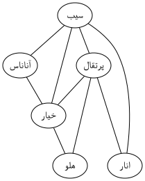
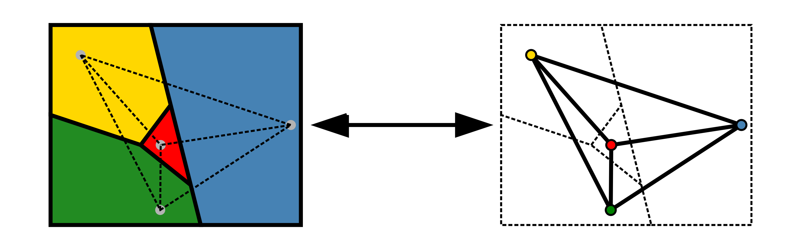
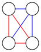

Introduction and Modeling with Graphs¶
What is a graph? A graph is a set of points (entities) and lines (relationships). In Figure 1, you see a graph:
{kind=link}

Figure 1¶
We call the points vertices and the lines edges. Each vertex and edge can symbolize anything.
Why Graphs?¶
A graph is an abstract concept. Like the number 2. In reality, there’s no physical "2," but we can have 2 balls or 2 apples. Balls and apples are complex objects, but in problems (e.g., "2 balls + 3 balls = ?"), their complexity doesn’t matter. So we remove irrelevant details and focus on the core of the problem.
Imagine planning a trip between two cities where roads connect some cities. Each road has a length, is either paved or unpaved, and we want the shortest travel time. A sharp mind quickly realizes that it doesn’t matter whether we’re moving between cities, countries, or villages. Thus, the problem is modeled abstractly as a graph: cities become vertices, roads become edges. For each edge, we know if it’s paved/unpaved and its length. Further reflection reveals that road type and length only affect travel time. These are also abstracted away, leaving a graph where each edge has a "time" value.
Abstraction not only simplifies problems but also lets us reuse solutions across domains. For example, knowing 2+3=5 makes it easy to solve "2 apples + 3 apples" or "2 pears + 3 pears." Similarly, solving the abstract problem of "graphs with edge travel times" allows the same solution to route packets in computer networks like the internet. Without abstraction, we might devise ad hoc solutions (e.g., "take paved roads first"), limiting applicability. This demonstrates the power of graphs as abstract models.
Where Do Graphs Appear?¶
Simple examples include: - People as vertices and friendships as edges. - Cities and roads. - Computer networks (as above).
But graphs emerge wherever relationships exist. For example: - A family tree is a graph where edges connect individuals to their parents. - A map can be modeled as a graph: regions are vertices, and adjacent regions share an edge.
{kind=link}

A more complex example is modeling a game like chess. Every possible board state is a vertex, and edges connect states reachable by a single move. This abstract model covers many strategy games, and AI algorithms for games often use this approach, enabling cross-game solutions.
Basic Definitions¶
Definitions clarify ideas concisely. No need to memorize them—practice will internalize these terms. All definitions are summarized on this page.
Vertex and Edge: As above: points and lines in a graph.
Loop: An edge connecting a vertex to itself.
Multiple Edges: Two or more edges connecting the same pair of vertices.
Simple Graph: A graph with no loops or multiple edges. Most graphs we use are simple.
Degree of a Vertex: The number of edges connected to a vertex. Loops count twice. Denoted as \(d_v\) for vertex :math:v.
Minimum Degree of a Graph: The smallest degree among all vertices. Denoted by :math:delta (lowercase delta). For multiple graphs (e.g., G and H), use :math:delta(G) or :math:delta(H).
Maximum Degree of a Graph: The largest degree among all vertices. Denoted by :math:Delta (uppercase delta). For multiple graphs, use :math:Delta(G) or :math:Delta(H).
Complement of a Simple Graph: A graph with the same vertices as G, but edges exist only if they don’t exist in G. The complement of the complement is the original graph. Denoted as :math:overline{G}. Below, the red and blue graphs are complements:
{kind=link}

Sum of All Degrees¶
We prove a simple theorem: the sum of all vertex degrees equals twice the number of edges, i.e., :math:sum d_v = 2e.
Proof: Each edge contributes to the degree of two vertices. A regular edge adds 1 to two degrees; a loop adds 2 to one degree. Thus, every edge increases the total degree sum by exactly 2. Hence, :math:sum d_v = 2e.
This book is made by The Shaazzz contributors.
It is publicly available with cc-by-sa license.
Last updated at مارس 16, 2025.
Rendered by Sphinx (4.3.2) and Minoo theme (Beta 0.9.7).